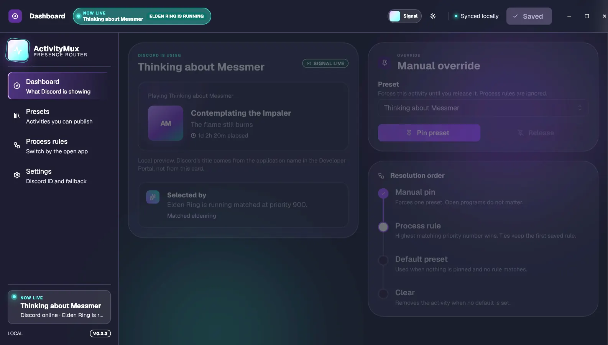

01
Presets
Save activity text, artwork, buttons, and timers. Switch without rebuilding anything.
Switch custom Discord Rich Presence from presets, running apps, or a manual pin.

Save activity text, artwork, buttons, and timers. Switch without rebuilding anything.
Publish a preset when an app runs. Priority decides which rule wins.
Override every rule with one click. Clear it when you are done.
Tray mode, launch at login, Discord reconnect, and portable JSON configuration.
No bot token. No client secret.
Its name becomes your activity title. Copy the Application ID.
Add text, a timer, artwork, or up to two buttons.
Pin it, set a fallback, or connect it to a running process.
No. It uses a public Application ID and Discord's local IPC connection.
No. It controls only the custom presence that ActivityMux publishes.
It stays in a versioned JSON file on your computer.
The current installers are unsigned. The source and build workflow are public.
Windows 10/11 and Linux.